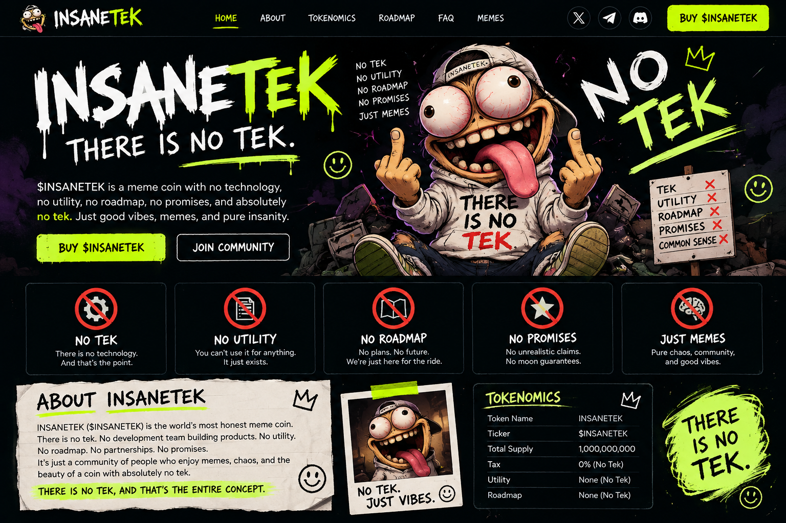

🚫⚙️
NO TEK
There is no technology pitch. That's the joke.
$INSANETEK is a meme coin built around one groundbreaking discovery: there is no tek. No tech pitch, no magic utility, no grand promises. Just goofy chaos, internet jokes, and a community that understands the bit.
Meme project concept only. No investment promises. Crypto assets can lose all their value.

There is no technology pitch. That's the joke.
No pretend use cases.
No fake future milestones.
No moon guarantees.
Goofy energy, community, and chaos.
INSANETEK ($INSANETEK) is a meme coin concept for people who enjoy absurd internet humor. There is no tek, no grand utility story, and no guaranteed outcome. The whole concept is a goofy mascot, ridiculous memes, and a community in on the joke.
THERE IS NO TEK, AND THAT'S THE WHOLE CONCEPT.
Generate a shareable one-liner from the official non-tek department.
Make the memes, remix the mascot, and keep the joke alive. Add your official social links here after you create and secure those accounts.
SET UP THE X ACCOUNT ↗